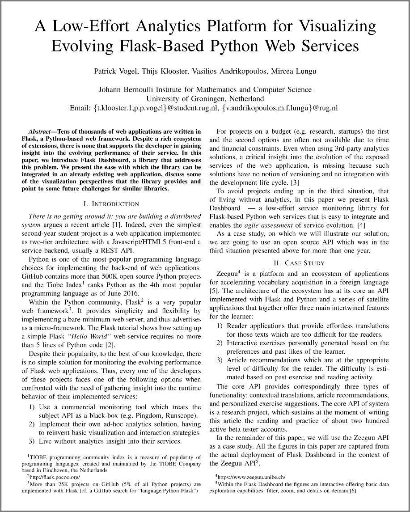

Thijs was born in 1996 in Heerenveen, The Netherlands. He lived there until he finished high school.
He went on to live in
Groningen, while studying Computing Science at the University there.
Thijs currently works in a supermarket as a greengrocer. In his spare time, he likes to game, watch
Netflix or jump into some or other new software project.
This small program was written in C#, using Visual Studio. It lets the user add TV Shows in order to track the progress made watching this TV Show. This way, users know exactly where they left off. Also, it keeps track of on which day of the week a new episode airs and when the next season will start if applicable. This was a small project done in order to obtain some familiarity with Visual Studio and C#.
This project was done for a small company that sells consumer fireworks. They wanted a cash
register system to automate
their Point-Of-Sale (POS) calculations of due amounts. This also benefits the customers, for
they could also see a summary
of the products they buy.
This project was written in C#, using Visual Studio. It makes use of a MS Access database to
store the product info.
These decisions were made since the system should be able to deploy on any laptop running
Windows. Also, inspecting and
adding or modifying product details had to be really easy and available through a user
friendly interface.
This project was done for a small company that sells consumer fireworks. The last few days of
every year, it is legal in the Netherlands to sell fireworks to customers. In order to increase their number of
sales, they wanted to make a brochure containing some of the deals they offer.
This project was done using Adobe InDesign and Photoshop. The final PDF had to conform to
specific requirements for printing. One hundred thousand brochures were printed and distributed within a certain area of the firework company.
This software is a novel library for Python-based Flask applications to gain insight into the evolving performance of a web service. As of yet, there is no library that supports the developer of a Flask web application to track its performance during the development lifetime of the project.
In order to track the performance, two solutions are possible. One is observing the evolution of unit test performance as the project evolves over time, the other is observing the evolution of live performance of a deployed service as this service evolves over time. This system enables them both: monitoring the evolution of the system via the monitoring of the test cases, as well as monitoring the live performance of the deployment of the service.
As a case study for testing the tool, a platform for vocabulary learning in a foreign language was utilized. This project was written in Python, in combination with Flask. This makes extending a service with the monitoring dashboard easier.
This project was done for a Bachelor Thesis in Computing Science. It was done jointly with Patrick Vogel.
This is the thesis I wrote in fulfillment of the requirements for the degree of Bachelor in Computing Science. It is about the work on the Flask Service Performance Monitoring Dashboard, which was the Bachelor thesis research project of Patrick Vogel and myself.
This thesis presents a novel library for Python-based Flask applications to gain insight into the evolving performance of a web service. As of yet, there is no library that supports the developer of a Flask web application to track its performance during the development lifetime of the project.
In order to track the performance, two solutions are possible. One is observing the evolution of unit test performance as the project evolves over time, the other is observing the evolution of live performance of a deployed service as this service evolves over time. This thesis presents and evaluates a system that enables the former: monitoring the evolution of the system via the monitoring of the test cases.
As a case study for testing the tool, a platform for vocabulary learning in a foreign language was utilized. It is a web application written in Python using Flask. Results of deploying the tool on this platform are discussed here as well.
Paper: Platform for Visualizing Evolving Web Services

This paper was written for a conference on software visualization (VISSOFT) which is held in Shanghai, China in September 2017. The paper is about the work on the Flask Service Performance Monitoring Dashboard, which was the Bachelor thesis research project of Patrick Vogel and myself. The paper is co-authored by Patrick Vogel, Vasilios Andrikopoulos and Mircea Lungu.
Tens of thousands of web applications are written in Flask, a Python-based web framework. Despite a rich ecosystem of extensions, there is none that supports the developer in gaining insight into the evolving performance of their service. In this paper, we introduce Flask Dashboard, a library that addresses this problem. We present the ease with which the library can be integrated in an already existing web application, discuss some of the visualization perspectives that the library provides and point to some future challenges for similar libraries.
The paper was accepted and is going to be published by VISSOFT. It may also be presented at the conference itself.